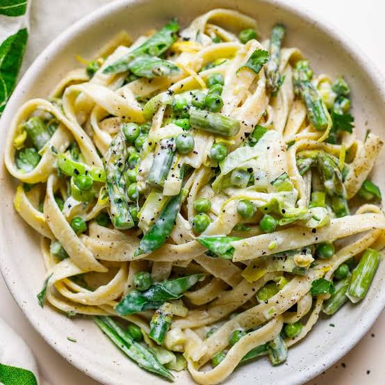

To make a great Alfredo pasta, you need to emulsify freshly grated Parmesan cheese with melted butter and starchy pasta water to form a velvety, cohesive coating over the noodles. I've highlighted some popular recipes from the web, or you can follow the creamy homemade recipe below
Bring a large pot of heavily salted water to a rolling boil. Add the fettuccine and cook until it is al dente, usually about 8 to 10 minutes.
Right before straining, scoop out and save at least 1/2 cup of the starchy cooking water. Drain the remaining pasta
Pour the heavy cream into the skillet. Bring it to a low simmer and let it bubble gently for 2 to 3 minutes until slightly thickened.
Turn the heat down to low. Whisk in the freshly grated Parmesan cheese gradually until it is completely melted and the sauce is smooth. Season with a pinch of salt and black pepper.
Toss the cooked fettuccine directly into the skillet with the sauce. Pour in a few tablespoons of the reserved pasta water. Stir and toss vigorously over low heat until the sauce glosses over and coats every strand of noodle.